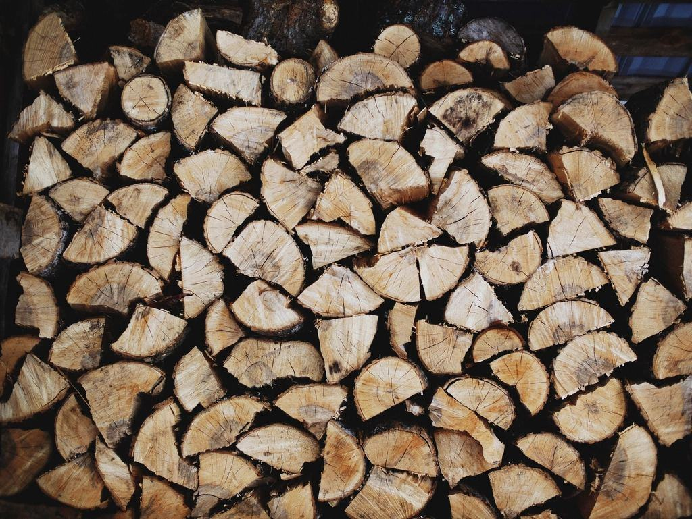
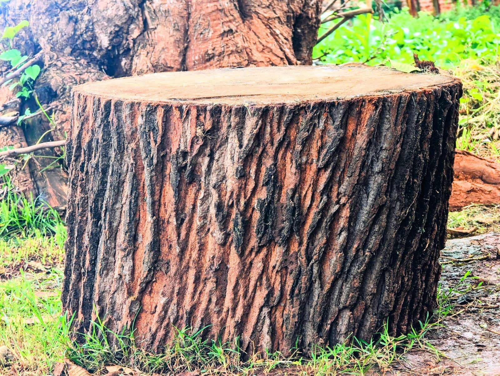

Om Kraftgata
Kraftgata grundades 2010 av Patrik Johansson, som arbetat tio år som linjemontör och sett hur många strömavbrott som började med en gran i ledningsgatan. Han anställde två arborister och köpte en isolerad lift, och i dag är vi nitton anställda med depå i Norremark norr om Växjö centrum.
Vi tar ned och beskär träd som hotar el- och teleledningar – åt nätbolag, vägföreningar och villaägare med servis över tomten.
Kraftgata grundades 2010 av Patrik Johansson, som arbetat tio år som linjemontör och sett hur många strömavbrott som började med en gran i ledningsgatan. Han anställde två arborister och köpte en isolerad lift, och i dag är vi nitton anställda med depå i Norremark norr om Växjö centrum.
Ungefär två tredjedelar av arbetet är ramavtal med regionala elnätsbolag och fiberföretag: vi röjer ledningsgator, fäller kantträd och beskär runt stolpar och nätstationer. Resten är villaägare och vägföreningar med träd över servisledningen eller en luftledning längs uppfarten. Innan någon klättrar har vi alltid en skriftlig frånkoppling från nätägaren.

Där skogen möter elnätet
Kraftgata grundades 2010 av Patrik Johansson, som arbetat tio år som linjemontör och sett hur många strömavbrott som började med en gran i ledningsgatan. Han anställde två arborister och köpte en isolerad lift, och i dag är vi nitton anställda med depå i Norremark norr om Växjö centrum.
Anmäl ett träd nära ledning
Skriv adressen, stolpens nummer om du ser det och hur nära grenarna går. En bild hjälper mycket.
- Telefon
- 070-174 06 14
- E-post
- order@kraftgata.se
- Öppettider
- Mån–fre 6.30–16 · Stormjour enligt avtal med nätbolagen
Kontakta oss
- Bas
- Verkstadsgatan 11
352 46 Växjö - Telefon
- 070-174 06 14
- E-post
- order@kraftgata.se
- Öppettider
- Mån–fre 6.30–16 · Stormjour enligt avtal med nätbolagen